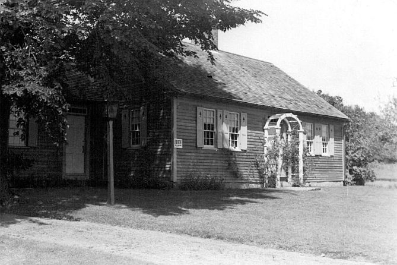
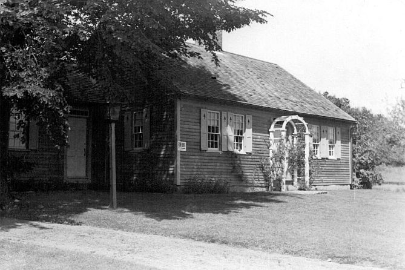

The Winn House is named after Captain
James Winn who came from a sea-faring family. He was born in
1808 and was the son of James Winn and Philadelphia Maxwell.
In 1846 the Winn family launched a 161–ton brig out of Kennebunkport
with Captain James at the helm. After several trips he
succumbed to an illness that was aboard the vessel and died at the New
York Marine Hospital.
After analysis by experts, the house was determined to have been built around 1780 probably by James Winn Sr. The analysis also showed evidence of an early 19th century restoration. The central staircase and the front door were added at that time. The house is built around a central chimney with four fireplaces. Its other features include wide floor boards, feather board paneling, interior shutters in the back room, original windows and a beautiful federal staircase and mantel. Remarkably. through two hundred years of owners and tenants nothing has changed the integrity of its original architectural beginnings. The house which formerly stood on Route One north  of the village was donated to the town by Phyllis Perkins and was moved to Jacobs Field by the Rotary Club. Committees were formed and volunteers from the town scraped, painted and researched the building. In 2001, both the house and the Dorothea Jacobs Grant Park became a reality. During the original move, "the ell" or addition to the side of the house became separated from the main structure. A plan was drawn with the exact measurements taken from the original building. In 2005, a new ell was completed and added to the restored house. The addition houses the Littlefield Genealogical Library and is used for meetings and educational activities. Future projects include restoration of the fireplaces and the upstairs rooms.
After analysis by experts, the house was determined to have been built around 1780 probably by James Winn Sr. The analysis also showed evidence of an early 19th century restoration. The central staircase and the front door were added at that time. The house is built around a central chimney with four fireplaces. Its other features include wide floor boards, feather board paneling, interior shutters in the back room, original windows and a beautiful federal staircase and mantel. Remarkably. through two hundred years of owners and tenants nothing has changed the integrity of its original architectural beginnings. The house which formerly stood on Route One north  of the village was donated to the town by Phyllis Perkins and was moved to Jacobs Field by the Rotary Club. Committees were formed and volunteers from the town scraped, painted and researched the building. In 2001, both the house and the Dorothea Jacobs Grant Park became a reality. During the original move, "the ell" or addition to the side of the house became separated from the main structure. A plan was drawn with the exact measurements taken from the original building. In 2005, a new ell was completed and added to the restored house. The addition houses the Littlefield Genealogical Library and is used for meetings and educational activities. Future projects include restoration of the fireplaces and the upstairs rooms.